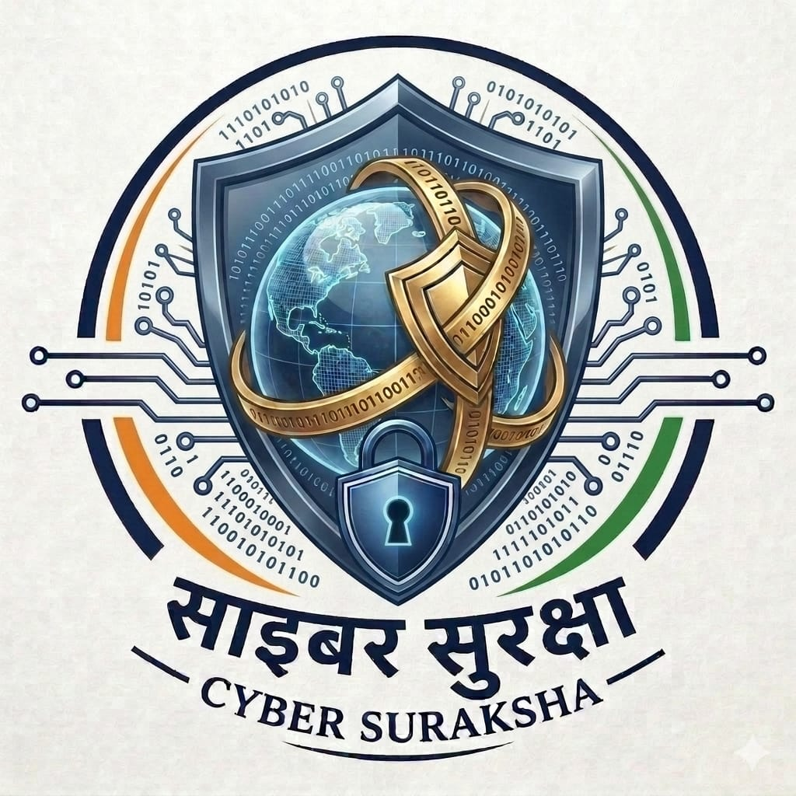
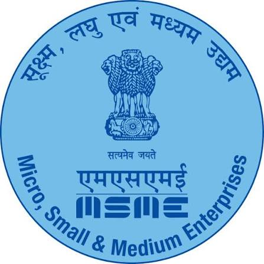
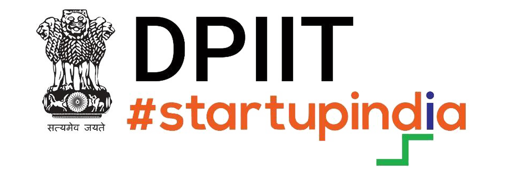

DIVISION_01
Cyber Crime Agency
Cyber Crime Division responsible for cyber related crime mitigation.
Division profile & courses ↗Cyber World Organisation brings together cyber awareness, ethical security learning, digital forensics, software development, and community initiatives to help build a safer, more capable digital society.
Explore CWO's divisions, each with its own focus, learning pathways, and opportunities to contribute. All educational security activities should take place only in authorised environments.
Cyber Crime Division responsible for cyber related crime mitigation.
Division profile & courses ↗
Cyber Awareness Division deals with cyber education and awareness.
Division profile & courses ↗It is a Cyber Security Forum deals with Conferences and Hackathon.
Division profile & courses ↗An infosec community dealing with ethical hacking, bug hunting, cyber pentest and hacking education.
Division profile & courses ↗
An AI and product development division for AI products, software development and related innovation.
Division profile & courses ↗Responsible for forensics-related education courses, training, and forensic services.
Division profile & courses ↗CWO's learning catalogue is organised by division. Course descriptions are programme outlines and should be updated with confirmed schedules, fees, instructors, and enrolment details before publication.
Understand online fraud, phishing, privacy, account protection, and safe digital habits.
Explore awareness courses ↗Study secure coding, ethical testing, web security, and authorised lab-based practice.
Explore infosec courses ↗Learn evidence integrity, forensic workflows, log analysis, and investigative foundations.
Explore DFOT courses ↗CWO highlights the following public institutions and initiatives as engagement areas. A listing here does not by itself confirm a formal partnership or endorsement.


For brand accuracy, the partner page links to official websites. Official logo artwork should be downloaded from the respective government brand resource pages and used in accordance with their guidelines.
Learn with peers, support awareness activities, help build useful products, or contribute your specialist skills.